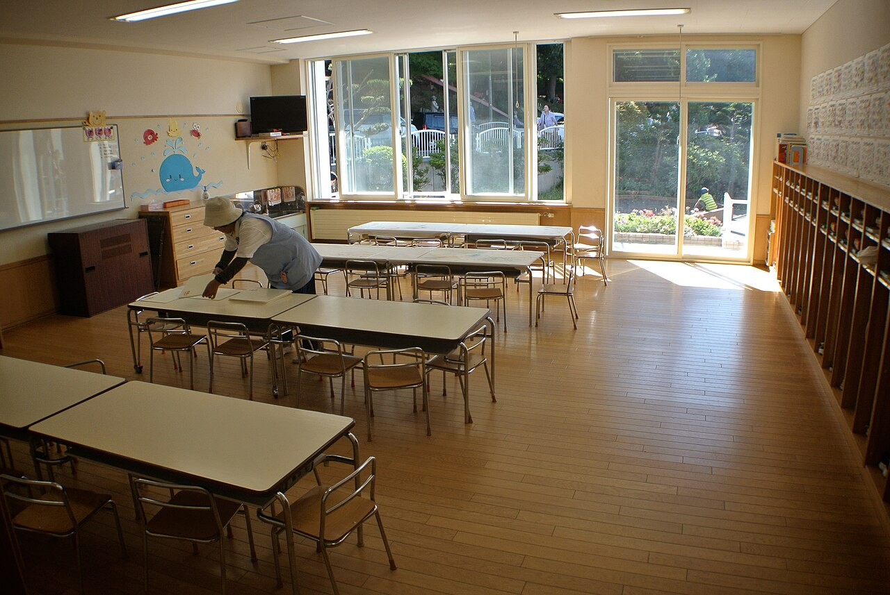

台中市私立小蝸牛幼兒園
西屯 蒙特梭利幼兒園
讓孩子在安心的環境裡，按自己的步調學習。MOCK
園所特色
01
蒙特梭利教學
以孩子為中心，讓孩子自己選擇教具、自己動手完成。
02
小班照顧MOCK
老師有足夠時間關注每一位孩子。
03
安全舒適的環境MOCK
空間明亮，設施依孩子的身高設計。

園所環境
預約參觀
看園所日常
孩子們每天的活動影片，都放在我們的 Facebook 粉專。
到 Facebook 看園所日常來園參觀
- 電話MOCK
- 04-0000-0000
- 參觀時間MOCK
- 週一至週五 上午 10:00–11:30，請先用 LINE 或電話預約。
- 收托年齡與班別MOCK
- 2 歲至入小學前，分幼幼班、小班、中班、大班。
常見問題MOCK
幾歲可以入園？
2 歲至入小學前。
怎麼預約參觀？
請用 LINE 或電話預約，參觀時間為週一至週五上午 10:00–11:30。
園所在哪裡？
臺中市西屯區福林里福科路658巷9弄7號。
有哪些班別？
幼幼班、小班、中班、大班。
歡迎來參觀，看看孩子的一天
先加入 LINE，我們會回覆適合的參觀時間。MOCK